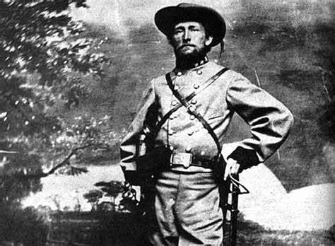
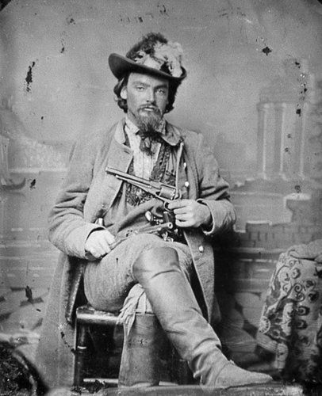
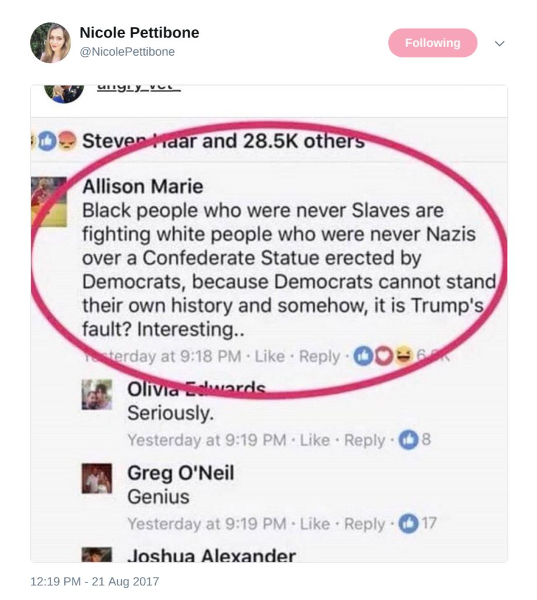
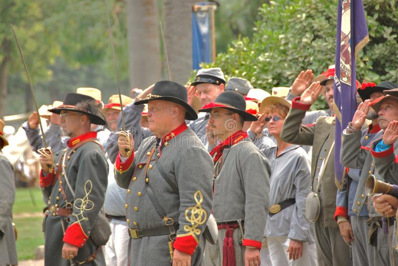
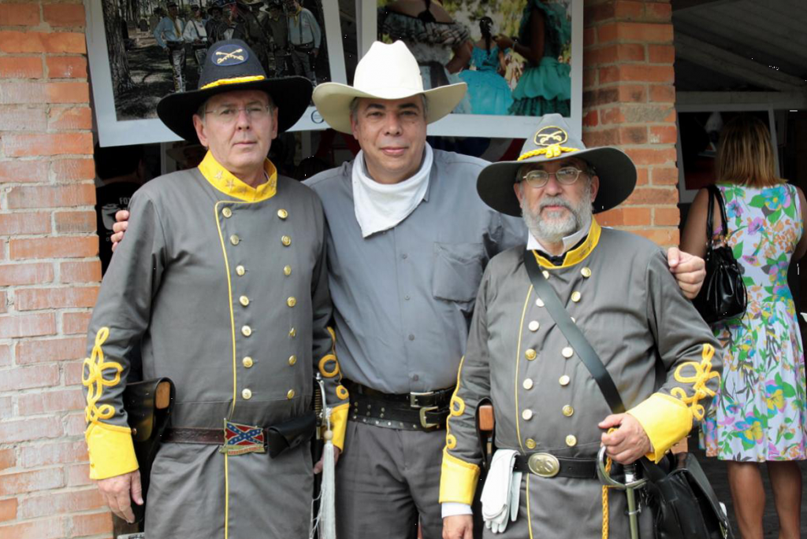
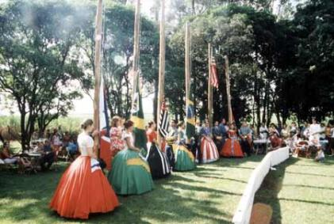
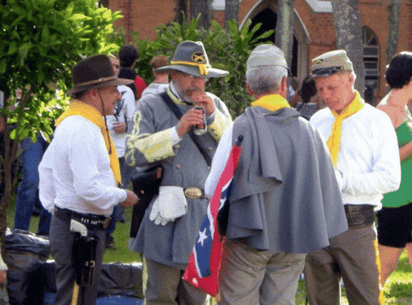
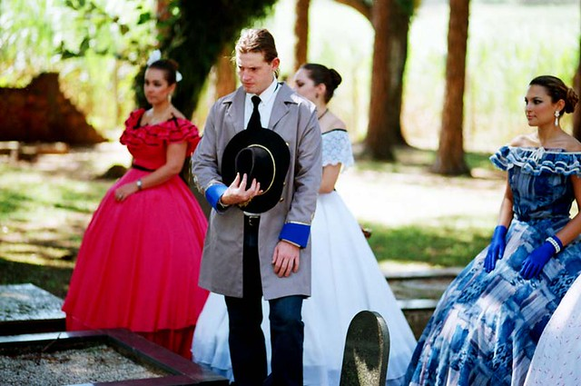
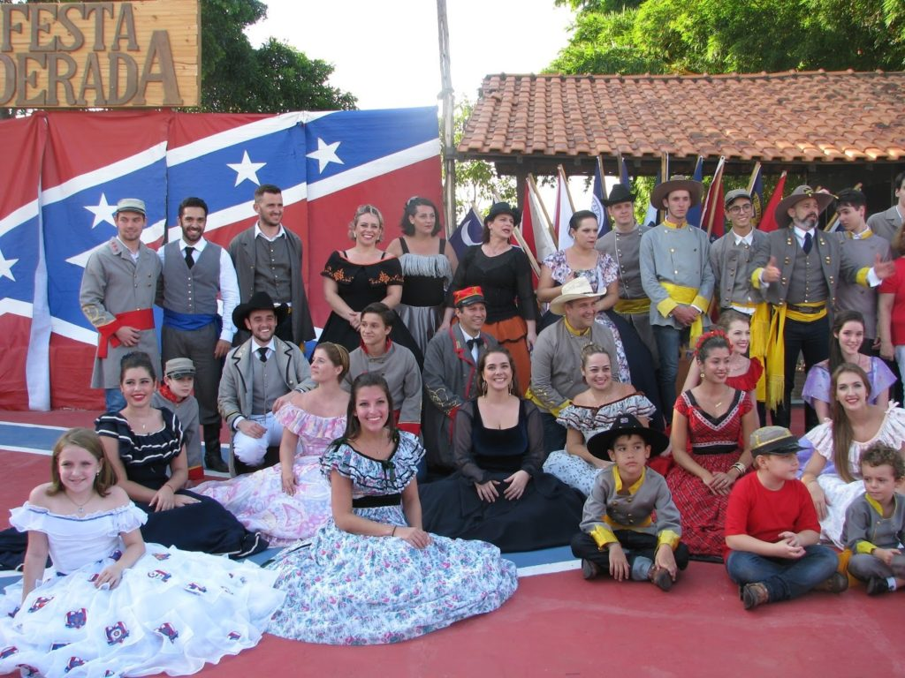
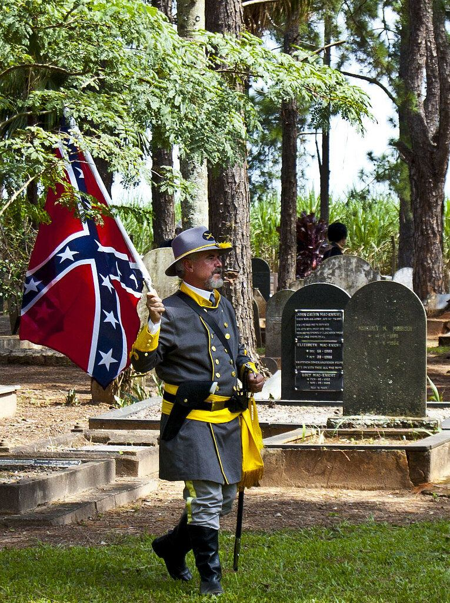

The American civil war set the South on fire. There in the heart of the United States was endless desolation, death, crime, and violence on a very, very personal scale. It tore at the heart of America. In the midst of all this, was an exit of Americans who fled American for a life elsewhere. The confederates that fled the United States didn’t do so to set up a nation where slavery was legal. They went elsewhere to set up a state where they the people had more power than the local government there.
This is their story.

History.
History is very interesting, and one of the most interesting things about it is that it is constantly changing. Our reality, our knowledge of history is under constant assault, and under constant revision.
I grew up being taught that Christopher Columbus discovered America, and that the native Indians entered via a Bering Sea “land bridge”. Today, it is pretty well established that there have been numerous explorations of North America by everyone from the Ancient Egyptians to the Vikings, and even the Chinese. And as time progresses we have a better understanding that ancient man, those who inhabited North America, had the ability to create boats and sail on the high seas in earnest without fear.
Surprise Discovery That Ancient Tin Ingots Found in Israel Came From England ... the British Isles had developed maritime trade routes with the rest of the world as early as the Bronze Age. -Ancient Origins
But it’s not just that.
History is being rewritten to fit political narratives. Everything from “Islam is a nation of peace”, to “the Nazi Holocaust did not occur”. Everything is being rewritten. It’s a common theme, this reconstruction of history, and erasure of the past. We see it all the time, in every nation.
From the Taliban (and their friends the) ISIS destroying the statues of Buddha in Afghanistan, Syria, and Iraq to the destruction of statues in America and the rewrite of the political narratives for political expediency. It is everywhere. Once the Internet made mass erasure of the past expedient (a re-writable “white board”, if you will), everything has become prone to being erased and a new narrative written over it.
Enter President Obama
"Barack knows that we are going to have to make sacrifices; we are going to have to change our conversation; we're going to have to change our traditions, our history; we're going to have to move into a different place as a nation." -Michelle Obama
Up until 2013, under President Obama, every single textbook and history book in the United States stated that the primary cause of the American Civil War was related to abuses of the tenth amendment. (Don’t believe me? Go visit a used book store, why won’t ya?)
They all were in lock-step with this narrative.
In American political discourse, states' rights are political powers held for the state governments rather than the federal government according to the United States Constitution, reflecting especially the enumerated powers of Congress and the Tenth Amendment. The enumerated powers that are listed in the Constitution include exclusive federal powers, as well as concurrent powers that are shared with the states, and all of those powers are contrasted with the reserved powers—also called states' rights—that only the states possess. -Wikipedia
For political reasons, and to reinforce his base, President Obama (around 2009 through 2014) rewrote history. Changing all internet references to the causes of the American Civil War from “States Rights” to “Slavery”. Today, if you visit any internet website on the causes of the American Civil War, you will discover that the causes are not listed as [1] Slavery, with a selection of [2] other causes that include “States Rights”.
Fun exercise; Go to Wikipedia "The causes for the Civil War". Then go to the Revision History page. Check out the activity there, and the dates of the changes, as well as where the changes originated from.
This is interesting on numerous levels.
I find it interesting simply because all of the States that joined the Confederacy wrote up “Documents of Succession” that gave their reasons for leaving the United States union. And in those reasons, the top-most, A #1, most important reason was ‘States Rights”.
I mean, it’s RIGHT THERE.
There is no ambiguity there. The documents of succession list the reasons in great detail. (If a bit wordy.)
It’s in black and white.
It’s there, as plain as day. Not to mention that all of the discussions on succession that took place in the State capitals, and in the Federal Senate and Congress clearly state… unequivocally, that they left because the Federal government was interfering on the local and state level.
We won’t get too far into the rewriting discourse. That’s a subject for another time. Anyways, you can read about this rewriting of history and the reasons for it below. Don’t worry, the link opens up in a new tab.

The rights of the people
This is the “States Rights” issue. Where the United States Constitution plainly stated that the Rights of the people shall be held by them, or by their States. Not by the Federal Government.
After all, the PEOPLE created the government. And it must answer to them.
This did not go well in Washington D.C. for absolute power corrupts absolutely. They wanted more power. They wanted centralized power. They wanted it all.
They wanted it so much, that they fought a war over it.
And many, many people died.
“We the people” lost the Civil War
Those who lost, lost everything. They ended up losing the independence of their States, as well as many of their freedoms. They also discovered that they now answered to a singular centralized government located in Washington D.C..
After the American civil war, for the most part, the Bill of Rights was proven to be a sham.
If you negate one enumerated Right, you negate them all. It's only a simple matter of time.

Then, in 2013 President Obama, in one of his many efforts to rewrite history, started the narrative that the Civil War was fought over slavery. And that most “white people” still wanted slavery and that “white people” should be punished for their “privilege”.
You can see this narrative being reinforced in the mainstream American media, in the universities, and by “diversity officers” in the corporate board rooms.
"I've never owned, or was a slave, and a large percentage of our forefathers weren't wealthy enough to own one either. Please stop blaming me because some prior white people were idiots -- and remember, tons of white, Indian, Chinese, and other races have been enslaved too -- it was wrong for every one of them. " -Ted Nugent
An Obama follower (Cashing in on the “community organizer” scam.) instructing “white people” on their privilege…

Abruptly and suddenly all historical narratives on the internet were rewritten to embrace this idea. And of course, news, media and academia marched lock-step to promote it.
"Mr. Obama never missed an opportunity to sew racial divide. During his term in the Oval Office, racial relations literally went off the cliff. Mr. Obama and first lady Michelle promoted the false narrative that white America was literally guilty of hunting down blacks with glee. They whipped up resentment in minority communities against the police, even though a Harvard study found that blacks are no more likely to be killed by police than whites." -L. Todd Wood
Ah. But what of history?
Yes.
History.
Looking at history as a thinking person…
If the American confederates were so enraptured with slavery, wouldn’t they try to escape from the clutches of the Federal government when it appeared that the war was ending? Wouldn’t they flee with their favorite slaves? Wouldn’t they they relocate elsewhere to promote the core ideas slavery based Confederacy elsewhere?
Well, yes. You would think so.
Only, history tells us a different narrative.

The confederates that fled the United States didn’t do so to set up a nation where slavery was legal. They went elsewhere to set up a state where the people had more power than the government there.
Surprise! It just doesn't fit that "deplorable, Nazi, white privilege" narrative being shoved down our collective throats by the mainstream American media and their handlers the progressive Marxist Democrats.
As such, a study of these people who fled the Confederacy would be able to tell us all a lot about the causes of the American Civil War, and the things that were important to the membership of the Confederacy.
Let’s take a look at that.
The Confederados
Today... even though most of the Confederado descendants, being mainly of mixed race now, have fanned out to other parts of Brazil. Many of the descendants from the original Confedrados, with the typical Brazilian flair, have an affinity for and carry on the traditions from their homeland; Such as Confederate uniforms and it's flag, southern food and their protestant Baptist religion. Even though they identify with their past, they do consider themselves loyal Brazilian citizens. Maintaining a headquarters, as well as memorials and museums of their original descendant organization at the Campo center in Santa Bárbara D'Oeste. -Historum
Brazil is well-known for being a cultural hub of South American life with its unmatched love for football, its fun and sexy dances like the samba, and its Latin people. It in so many ways, no way resembles anything like the Confederate States of America in the 19th-century South.
So what kind of fiction do we have to invent to combine the two and make them fit together?
The answer is none.
Because that’s exactly what happened in Americana, a municipality of Sao Paulo, Brazil. There, the residents call themselves the Confederados. As they are descendants of the 19th-century residents of the Confederate States of America.
The Confederados carry on all the cultural artifacts of the Confederacy. This includes the Confederate flag, Confederate army uniforms, and Confederate-style dancing with its own Brazilian flair.
It’s their heritage.
So how did this come to be?
By mid-1865 the American Civil War was over and the South had lost—everything.
It was over.
Her cities and farmland were destroyed, political rights denied, the finest of her husbands, fathers, and sons dead or disabled. With Lincoln dead and Radical Republican revenge on the horizon, the occupied territory of the southern United States did not appear to be a promising place for the foreseeable future.
Can you visualize what it must have been like?
Can you, really?
After the Civil War, many families from the old South were left landless and destitute. They probably hated living under a conquering army of Yankees.
Brazilian emperor Dom Pedro II realized this group of disenchanted Americans could be a solution to one of his problems: how to develop the sparsely-settled areas of his country. He was especially interested in developing the cultivation of cotton, a crop well-known to the former Confederates. He provided incentives to people who knew how to raise cotton, offering land at twenty-two cents an acre with four years credit and passage to Brazil for thirty Yankee dollars. Each family was encouraged to bring a tent, light-weight furniture, farming supplies and seeds, and provisions to last six months. Dom Pedro II sent recruiters into Alabama, Louisiana, Georgia, South Carolina, and Texas in search of experienced cotton farmers for his country. Many southerners saw this as their only option for happiness, to build a community with southern values in the jungle of Brazil. They would become known as the Confederados. -EOGN
Imagine today, in today’s polarized society. When the members of the OTHER political party gains the upper-hand and are Hell-bent on running things their way. Would you be willing to stay?
Would YOU?
Given this level of politicized violence, a life as a second-rate citizen, and all your livelihood destroyed, with a Federally sanctioned attack on your culture, many Southerners decided to leave.
And so they did.
They skedaddled.
See ya! Bye!
Some resettled out west, others even relocated in the North, and some went as far as friendly England. But the most popular destination for expatriate Confederates was a country further south: Brazil, where summer is perpetual and the harvest year-round.
The colonists were ecstatic about what they saw, and one wrote back to the Mobile Daily Register: “I have sugar cane, cotton, pumpkins, squash, five kinds of sweet potatoes, Irish potatoes, cornfield peas, snap beans, butter beans, ochre [probably okra], tomatoes and fine chance at tobacco. I have a great variety of fruits on my place. I have made enough to live well on and am better pleased than other.” -EOGN
Time to leave.
When the Civil War ended in 1865, many Southerners felt that they no longer fit in the United States. As such, they decided to go to a place where they could find cheap land to build new lives.

In 1865, the Civil War ended with a Confederate loss and the Union abolishing slavery. The bloody conflict caused more than 600,000 military casualties and nearly depleted the Southern economy. The North disbanded the Confederate army and began a period known as the Reconstruction. It wasn’t exactly welcomed in the South, and some decided to leave the United States for somewhere else. -The Vintage News
Though General Robert E. Lee discouraged them from leaving, around 20,000 Southerners set sail for Brazil, the only time in American history where people left the country in large numbers for another one.
Accounts vary on how many left.
They vary from 10,000 to 20,000 families. We know that at a minimum of 10,000 boarded ships and went by sea. Those that took trains, or wagons down through Mexico are much more difficult to track.
Nor, do we do not know what happened to many of them. Obviously some died due to illness and sickness in the harsh tropics. Some just moved on elsewhere, and ended up in Argentina, and other South American nations. We do know that some of those who went to Brazil eventually sailed back to the US eventually. Well, because building a new life is surprisingly hard.
Today, we know that 94 of the original American families remained as their “blood lines” and “family names” are all predominant in the Americanized communities. These families became rich from growing cotton and sugarcane.
They are also the people from whom the modern-day Confederados are descended.
At least one shipload of Southerners docked in the port of Belém, set sail down the Amazon River and survived on berries and monkey meat, but perished from malaria. The only community of Confederates that survived was the group that got to the place they called Americana, which they chose because it most closely paralleled their home in Georgia.” -News Punch

They balkanized Brazil.
Those that arrived refused to integrate.
This group refused to learn Portuguese, built Baptist churches and their own schools, and made their own traditional meals like biscuits and gravy, pecan pie, and black-eyed peas. They believed that their ways of the Confederacy and their Southern lifestyle was superior to anything found in Brazil at the time.
Over the last 100 years, the original Confederate bloodlines were slowly diluted, resulting in today’s part-Spanish, part-Confederate descendants who speak mostly Portuguese but also speak English with a Southern drawl.
Brazil Welcomes the Confederacy
When the Confederacy was defeated in the US Civil War, Emperor Dom Pedro II of Brazil, a staunch ally of the Confederate cause, welcomed Confederate soldiers and sympathizers wishing to start a new life.
Thousands of Southerners, motivated by a hate of the wartime enemy and an instinctive urge to preserve Southern cultural values, flocked to Brazil.
They moved to a climate that in many ways resembled the American South. They moved to a place where they were permitted to keep their society, their culture and their heritage. They moved to a place where they were accepted as themselves.

“The Confederados, despite the usual problems of colonization, thrived in an environment that had defeated many settlers before them. Americana became an image of the antebellum period of the American south. Many of the first Baptist churches in Brazil were started there. They built public schools and provided education for their female children, something that was rare in Brazil. They flew the Confederate flag and enjoyed the traditional southern meals of biscuits and gravy, black-eyed peas and, of course, grits. The settlers had very European names like Stonewall and Butler. They would bake pecan pies, have debutante balls, and sing southern hymns. Only recently was the Confederate flag removed from the city’s crest. In 1906, US Secretary of State Elihu Root made a quick stop in Americana, but had little to say to the expatriates. Root later told his biographer that he left Americana weepy and had told the Confederados they’d never be welcome in the United States again.” -News Punch
There was nothing random about the Southerners’ choice.
At the war’s end Emperor Dom Pedro II of Brazil, a Mason, began an extensive recruitment campaign. He did this primarily among his fellow Masonic brothers. He offered quite a bit. Indeed, he offered the world’s leading cotton-growing experts (American Southerners) some of the best cotton-growing land at twenty-two cents an acre, hoping to boost his own country’s developing economy.
The South’s most respected Robert E. Lee and other leaders throughout the South urged Southerners to resist the offers. They did not want to see a “brain drain” dilute the “strength of the South”. Indeed, the South had lost too many of her best men already.
Defeated and rejected in their own land, however, many Southerners responded to the warm welcome extended by the Brazilians, and Dom Pedro’s plan worked to the good of both parties.
Waves of Confederate immigrants
Over the next two decades as many as 20,000 Confederate refugees relocated to Brazil. We know that some of them eventually returned to the United States while others succumbed to deadly tropical disease. But several thousand brave pioneers remained permanently, not only forging a new life in a strange land but succeeding in it and making valuable contributions to their new country.
In 1866 an ex-senator from Alabama, Colonel William Norris, became the first American settler in Brazil. He purchased land near the Quilombo River in the state of São Paulo.
The William Hutchinson Norris from Alabama served in the Alabama Legislature as a member of the House of Representatives and later as a State Senator during the 1830's and 1840's...In 1861 he was the Grand Master of Masons in Alabama. No record has yet been found of him having served in the military during the Civil War period, or in any other period. During the 1820's he did serve in a Militia Unit in Wilcox County dealing with the Indians. It should be noted that 6 of his sons served in the War and they were James Reece Norris, Robert Cicero, Francis Johnson, Henry Clay, Samuel Leonidas and Benjamin Harrison Norris. All except Francis Johnson Norris migrated to Brazil with the rest of the family. James Reece, Benjamin and Samuel returned to this country after several years in Brazil. - The Alabama in the Civil War Message Board - Archive
A year later many more Americans followed. They came to settle in or near the “Norris colony” and in other areas throughout Brazil.

When new arrivals saw 100% returns on their first two-year cotton plantings, the success stories brought new waves of Southerners fleeing worsening conditions (Please reference “Carpetbaggers & Scalawags“) back home.
In 1875 the Brazilian government built a railway station near Norris’s settlement—one hundred cars were needed to haul the popular watermelon crop alone in the late 1800’s—and the village that grew up around it soon became known popularly as Villa dos Americanos, “Town of the Americans.”

Some of the families that settled
Many citizens of the Confederacy disappeared from public records at the end of the Civil War or soon thereafter. Of course, record keeping was spotty at best in the turmoil that followed the defeat of the Confederacy. If you can’t find your relatives during that time, you might be tempted to say, “Oh well, he (or she) probably died in the war.”
Don’t be so sure.
In 1868, a number of families from former Confederate states in the South fled the Reconstruction policies for Brazil. They settled in various regions of the country but, within a few years, concentrated near the current towns of Americana and Santa Barbara, Sao Paulo State.
These settlements were approximately 100 miles inland from the city of Sao Paulo. The family of Colonel William H. Norris was the first to arrive from Alabama. His son Robert C. Norris and daughter-in-law Martha Temperance [Patti] Steagall as well as his own daughter Angela Norris accompanied the Colonel, but son Saunders Norris remained at the family home of Mt. Pleasant, Alabama, 40 miles northeast of Mobile.
Robert Cicero Norris Robert Cicero Norris was the son of Col. William Hutchison Norris. He was born in Perry County, Ala., March 7, 1837. His boyhood days were spent in Dallas County, Ala. From 1850 to 1856 he was a student at Fulton Academy, one of the best educational institutions of the State. Having finished the course there, he studied law under his father, though not intending to practice this profession; but he wished to inform himself concerning the laws of the country. At the age of twenty he taught in a public school for a year, and then he went to Brundidge, Ala., where he studied medicine under Dr. J.H. Dewberry as preceptor. He matriculated in the Mobile Medical College (now University of Alabama). On January 28, 1861, his studies were interrupted when he went with other volunteers under Capt. Theodore O'Hara to Pensacola to seize the navy yards. He then returned to his studies. On July 3, 1861, he enlisted in Company F, 15th Alabama Regiment, and went to Fort Mitchell for organization, and from there to Virginia, where his regiment served in Stonewall Jackson's brigade. In 1862 he was made sergeant major, serving in this capacity until 1864, and acted as adjutant much of the time. He was later assigned to Company A, 60th Alabama Regiment, and promoted to first lieutenant. In an engagement on Hatcher's Run he was captured and sent as a prisoner to Fort Delaware, where he was kept until June 17, 1865. He arrived at his old home in Alabama on the 5th of July. During the four years' service he was wounded three times. He served in many battles and skirmishes, including Front Royal, Port Republic, Harper's Ferry, Cross Keys, Cold Harbor, Malvern Hill, Cedar Run, Second Manassas, Sharpsburg, Fredericksburg, Gettysburg, Chickamauga, Brown's Ferry, Wilderness, Spottsylvania Courthouse, Second Cold Harbor, Petersburg, Darbytown Road, and Williamsburg Road. At the end of 1865 he traveled to Brazil and settled in Villa Americana, State of Sao Paulo, being the first American to settle in that section of the country. Afterwards a flourishing American colony was established there. He returned to the Mobile in 1890 to study medicine. After completing his studies, he rejoined his wife and their 10 children in Brazil, where he established a successful practice. He retired from active life in 1911. He was made a Mason in 1858 in the Fulton Lodge, Dallas County. In Brazil he took an active part in organizing a lodge, A.Y.M., in Santa Barbara, of which he was Senior Warden for two years, afterwards being elected to the position of Grand Master, which he held until his death. Dr. Robert C. Norris departed this life on May 14, 1913. - see CONFEDERATE VETERAN, November 1913, Vol. 21, No. 11
Martha Temperance Steagall Martha Temperance Steagall was born on February 4, 1850 in Union City, Obion County, Tennessee. She was the daughter of Henry Farrar Steagall and Delia Elizabeth (Peck) Steagall. She relocated with the rest of her family and her husband Robert C. Norris to Brazil in 1867. She and her husband had two daughters, Kennie and Julia and a son Robert Clay Norris. She died on September 16, 1933 in Washington, D.C. - Special Collections & Archives Department Homepage
Robert Clay Norris Robert Clay Norris was born January 5, 1872 in Santa Barbara d'Oeste, Sao Paulo, Brazil. He studied dentistry in Sao Paulo and assisted in the practice of Dr. I. G. Baumgardner before his untimely death on December 10, 1906. He married Ana Candida Escobar 1895 in Santa Barbara d'Oeste, Sao Paulo, Brazil. - Special Collections & Archives Department Homepage
John Ridley Bufird Prior to relocating to the American Civil War, John Ridley Buford was a resident of Eufaula, Alabama. He enlisted in April 1862, at Eufaula, Alabama and was appointed Sergeant in Captain Reuben Koulb's Battery of the Barbour Alabama Light Artillery. He was transferred on November 6, 1864, with the rank of private to the Eufaula Battery of Alabama Light Artillery. He was in St. Mary's Hospital at Union Springs, Alabama from September 29,1864, until November 6, 1864. Buford took part in the battles of Kentucky Campaign, Hood's Tennessee Campaign, and Chickamauga, and was paroled at Meridian, Mississippi, on May 10, 1865. At his parole, he listed his residence as Eufaula. In late February of 1867, Buford moved to Santa Barbara, Brazil where he farmed tobacco. He was alive in 1913 at age of 72. - Special Collections & Archives Department Homepage
While the Confederates that moved to Brazil came from all over the South, it does seem like the most notable ones originated out of Alabama for some reason. Curious.
I wonder why.
At the opening of the twentieth century officials adopted the name Villa Americana, and today the city begun by Confederate Americans, with a population of over 200,000, is called simply “Americana.”
Americana
A small town soon formed, and a train station was built when the first railroad line was constructed through the area in 1875. The train station was officially named “Villa da Estação de Santa Bárbara” (Santa Bárbara Station Town), but the nearby town became popularly known as “Villa dos Americanos” (Town of the Americans). The town was later officially named Americana. -EOGN
Americana is still home to about 20,000 direct descendants of these original Southern planters. Though, Italian immigrants quickly moved in and eventually outnumbered them. However, there may be as many as ten times that number distributed all over, and throughout, all of Brazil.

The colonies remained a cloistered community for years to come. The Confederate refugees married among themselves and spoke only English. They also invested in separate schools, churches, and cemeteries, importing priests and teachers from the United States. The colonists founded the first Baptist Church in Brazil, together with the Campo Cemetery in which members of the Protestant religion were buried, according to their tradition. Alison Jones, who was a third-generation descendant of the original settlers, described her experience growing up in such an environment to the Seattle Times in a 1995 interview: “I remember when I was 4 years old, I was lost in a textile factory and I couldn’t tell the people anything because I only spoke English. I didn’t learn Portuguese until I started school.” -The Vintage News
They are in their fifth and sixth generations now.
On the whole, despite English-sounding names and lingering Southern accents for some, these down-stream Confederados think, look, and act like other Brazilians.
New waves of immigrants settled in and near Americana, notably large numbers of Italians and Germans in the 1880s. The families intermarried over the years, and today Americana’s population is described as a mixture of Luso-Afro-Brazilians (Luso meaning Portuguese) and immigrants, mainly Italian, Portuguese, German, and Arabic. The name of Americana still survives, and because of intermarriages, almost all of today’s citizens of the area can claim some Confederados ancestry. Indeed, English (with a southern accent) is the unofficial second language of the area and is still spoken by many in the area. Today Americana is a city of 120,000 people. The ties to the old South live on. Festa Confederada is a celebration that takes place in the cemetery where the old Confederates are buried. The food served includes southern fried chicken, vinegar pie, chess pie, and biscuits. Banjos are played and Confederate songs are sung. The men wear Confederate uniforms, and the women dress in pink and blue and wear matching ribbons in their hair. The festival often looks like scenes from “Gone With the Wind.” -EOGN
Though, you know, holding on to heritage and traditions is a good thing. Today in the Untied States we have forgotten many traditions and our heritage. Instead, we have replaced our history with pale versions.
Instead of eating fine home cooked meals, we eat progressive and modern fake-meat at McDonald’s. Instead of having a good home made baked pie, we get a mocha caramel latte smoothy from Starbucks. Instead of having home-made sweet-potato pie, we eat a Oreo cookie from the local 7-11.
I think we are missing out.
Slavery
The conventional (Obama era) narrative is that the Confederacy was all about slavery. The idea was that the Civil War was all about “white people” desirous of having and owning slaves. That is the causes of the American Civil War they say. They argue that a war needed to be fought not only to “free the slaves” but to teach a lesson to all those “white people” who have the deplorable notion that slavery can be institutionalized.
If this narrative is what is being portrayed as the reason, history says otherwise.
Of the 20,000 confederate immigrant families, only four people owned slaves.
Four People.
This held true, even though slavery was legal in Brazil. As well as legal in almost all of South America at that time.Why didn’t the survivors of the Confederacy create an expat Confederacy with slavery?
Why didn’t they?
It’s strange, and doesn’t fit the progressive liberal Obama-era narrative.
This has been born out by the work of Alcides Gussi, an independent researcher of the State University of Campinas, Sao Paolo. Who claims that only four families actually owned slave labor, with a total number of 66 slaves, in the period between 1868 to 1875.
Some cases were recorded in which the freed slaves decided to accompany their former masters. Most notable was the story of Steve Watson. Watson went to Brazil, together with Judge Dyer of Texas, his former owner, who assigned him to be an administrator of a sawmill. At one point, Dyer decided to return to the U.S., due to a combination of homesickness and financial failure. He left all his property in Brazil to Watson. Judith McKnight Jones, a great-granddaughter of one of the original American settlers, tried to explain the reasons for her family’s departure from Texas during the migration to the Seattle Times: “They came here because they felt that their ‘country’ had been invaded and their land confiscated. To them, there was nothing left there. So, they came here to try to re-create what they had before the war. I grew up listening to the stories. They were angry and bitter. When they talked about it, moving here, the war, leaving their homes, it was always a very sore subject for them.” -The Vintage News

The Festa Confederada
Once a year, however, at the Festa Confederada, the South rises in their blood to celebrate their heritage.
The correct name for the celebration is FEsta Confederada (FIEsta is Spanish, not Portuguese): http://festaconfederada.com.br/.
Proud descendants, most of mixed races, fly the Confederate flag—there is no racial stigma attached to it in Brazil.
Women deck out as Southern belles, complete with hoop skirts, while the men don uniforms of Confederate gray, dance with the girls, and drink over the War.
On the menu are Southern fried chicken, chess pie, and mouth-watering biscuits; “Dixie” plays in the background. Were it not for the Portuguese being spoken by participants, an observer might imagine himself in Mississippi or Alabama of a hundred and fifty years ago.
The meeting ground is Campo Cemetery near neighboring Santa Barbara d’Oeste, where most of their ancestors are buried. Confederados built the cemetery, near the first Presbyterian church in Brazil, when Catholics would not permit space for Protestant burial in their own churchyards.
An imposing memorial, boasting the stars-and-bars of the Confederate battle flag, stands in the middle of the cemetery, bearing the names of the early Confederados, the great-great-grandfathers and grandmothers of those who sing and dance and remember the land their families used to call home.
Today
Indeed, to this day, throughout towns in Brazil, the Confederacy and Southern US culture is celebrated annually. It is done so by the many thousands of descendants of these Americans, known locally as Confedorados. Now, after six or seven generations, many of whom now have non-white and African heritage.
Square dances are held, and confederate flags are flown proudly. Any racial connotations are long lost and remain tied to American special-interest groups fighting for political supremacy. Meanwhile, the Confederados maintain their society, one of many, amid the sea of racial diversity in Brazil.

Some Links for further study…
You can learn more about this settlement and the families who lived there by starting online. Auburn University has a large Confederados Collection; a guide to the collection may be found at http://www.lib.auburn.edu/archive/find-aid/958.htm.
A web site of the history of the Confederados may be found at http://www.confederados.com.br/. This web site also contains a list of Confederados families.
Much more information may be found in The Confederados: Old South Immigrants in Brazil, a book by by Cyrus B. Dawsey (Editor), James M. Dawsey (Editor), Michael L. Conniff (Foreword), & 9 more, available on Amazon at http://goo.gl/8IOgcs.
And now for my opinion…
Finally, my take on Obama rewriting history so that myself and others like me can be erased for our “white privilege” and a new Marxist society can be built upon our salted graves…
My relatives were too busy struggling with a potato blight in Ireland , and having to get drawn into servitude to escape it, and enslavement by the Russians in Poland. Don’t know about that, do you? It doesn’t fit the desired political narrative. Yeah. Just like your pampered baby who cries when it tosses it’s food on the floor. Life is hard. Get over it. Get. Over. It. What I opine about is not about the things that I personally experienced regarding the American Civil War. As I have no experiences, have you? Nope. The American Civil War ended a long, long time ago. Everyone who participated in it is now DEAD. They are dead. Long, long dead. If you did dig them up, you will see rotting flesh and foul odors.
Posts Regarding Life and Contentment
Here are some other similar posts on this venue. If you enjoyed this post, you might like these posts as well. These posts tend to discuss growing up in America. Often, I like to compare my life in America with the society within communist China. As there are some really stark differences between the two.


More Posts about Life
I have broken apart some other posts. They can best be classified about ones actions as they contribute to happiness and life. They are a little different, in subtle ways.


Funny Pictures

Be the Rufus – Tales of Everyday Heroism.